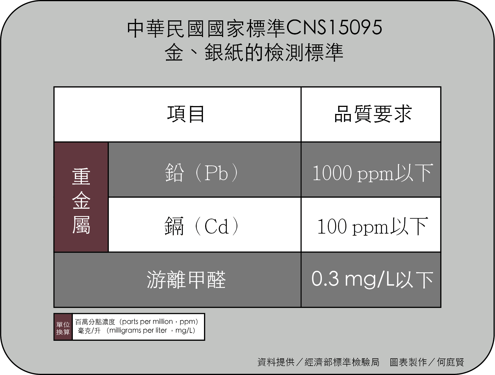
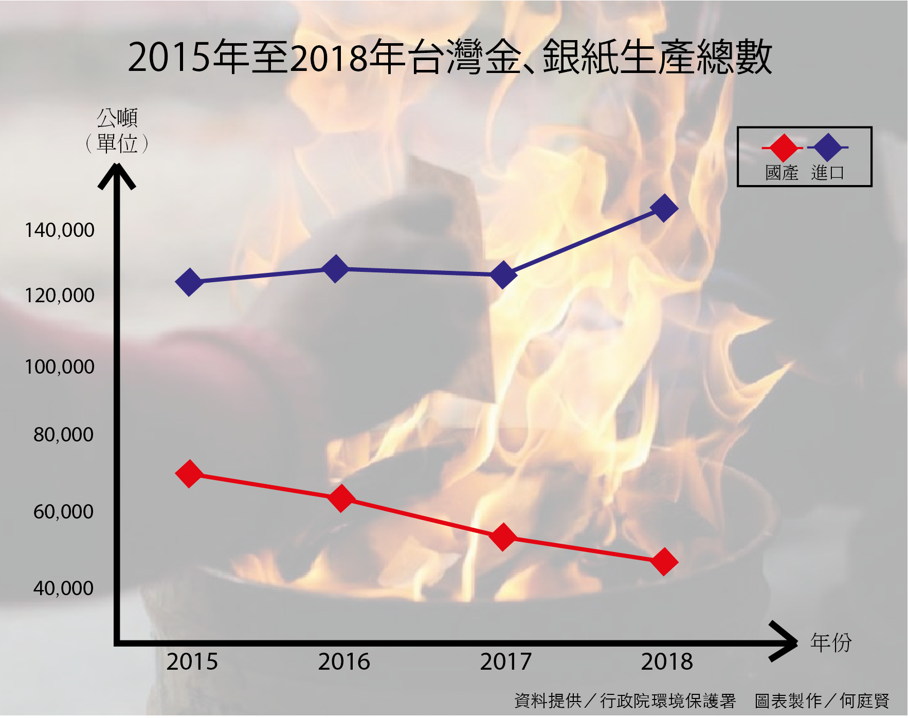
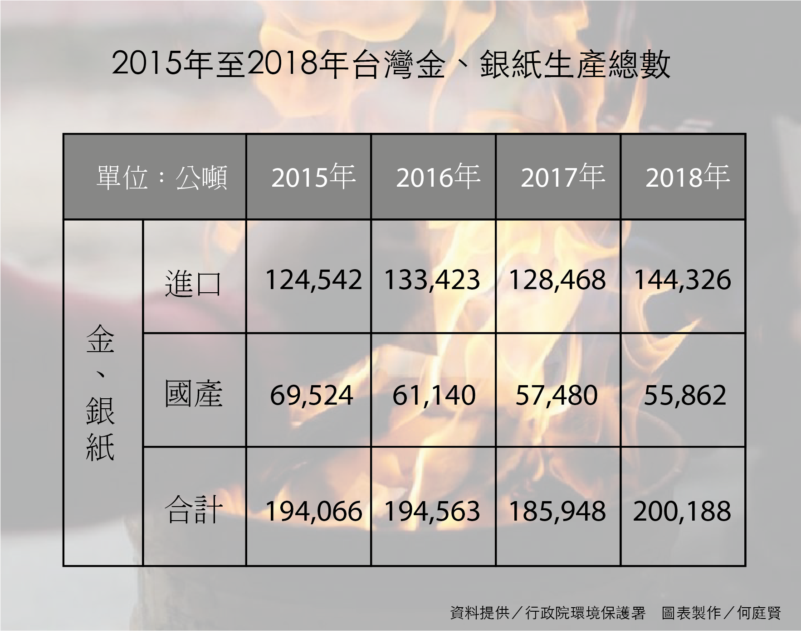

何庭賢
2019/5/23
【專題記者葉伸怡、呂立竹、許芷瑄、何庭賢、李育軒綜合報導】現今許多廟宇為減少空污，紛紛降低香品燃燒量，像是龍山寺在今年五月起禁點蠟燭。不僅廟方響應環保，部分民眾也購買「環保化」的祭祀用品，像是環保金紙及金爐等。然而目前國內卻無法規明確規範環保金紙的成分，有些業者稱環保金紙的原料是環保特點、有些業者則認為提升金紙面額，以減少燃燒量即為環保。業者對於環保金紙定義分歧，政府亦未立法規範，環保金紙是否名副其實達到環保效果，仍無確切依據。
各地金紙原料定義不同 環保和傳統差在哪？
「我做的環保金紙都使用純竹漿，沒有添加任何化學物質。」永芳環保金紙面製造老闆曾世杰解釋，他將台灣本地的竹子切成小段並加水研磨，不摻雜其他物質，成分單純，因此製成的金紙燃燒所產生的煙以及灰燼較少。金紙製造商黃專員認為，傳統和環保金紙最大的差別在於材質不同，竹漿製成的環保金紙重量輕，燃燒速度快，不易悶燒而產生黑煙。
談到純竹漿就會一肚子火，因為在期初的採訪內，一直遇到瓶頸！因為不同業者與製造商對於純竹漿的定義和用途都截然不同！快被氣死了！ 中南部金紙製造商所製造的環保金紙，多以天然竹子為原料。 圖／何庭賢攝
中南部金紙製造商所製造的環保金紙，多以天然竹子為原料。 圖／何庭賢攝然而，製造商與販售業者對傳統金紙與環保金紙的認知不同，舉例來說，北部金紙販售業者認為竹製金紙是傳統金紙，然而中南部金紙製造商則以竹子做為環保金紙的原料。黃專員解釋，由於全台製造商位於不同地區，長久以來習慣不同，因此對金紙的產製過程及材質定義不同。
現今環保金紙除了講求使用天然紙材，金紙上所黏貼的「箔」也有所不同，販售金紙的林姓業者提到，目前金紙上的箔分為三種，分別是機器壓製、手工黏貼及機器燙金。傳統金紙多使用手工黏貼或機器壓製的方式，以含量較高的錫來製作箔。然而，因為錫的燃點高，箔無法完全燒化，燃燒後會留下金屬殘渣。
 中金紙製造的過程包含在紙張成形後，先燙上箔，蓋上紅色印章，最後再裁切成符合的大小，即可包裝出貨。 圖／呂立竹攝
中金紙製造的過程包含在紙張成形後，先燙上箔，蓋上紅色印章，最後再裁切成符合的大小，即可包裝出貨。 圖／呂立竹攝曾世杰表示，他目前改用燙金的手法，將低含量的鋁箔電鍍到金紙上，使其可完全燃燒。有別於曾世杰以鋁、電鍍燙金改善箔的燃燒問題，黃專員提到，他們將環保金紙上的箔改成亦可完全燒化的紙箔。他也補充說明，傳統習俗中，燒金紙主要目的在於燃燒金紙上的「箔」，箔的面積越大，金紙的面額就越大，因此亦有業者藉由加大環保金紙上的箔，提高金紙面額，讓民眾燃燒時能以較少張數的金紙達到需要的額度。
曾使用過環保金紙的民眾林太太認為，環保金紙摸起來比較細緻，厚度也比傳統金紙薄，大約只有傳統金紙的一半。林太太提到，環保金紙燃燒後產生的灰燼與傳統金紙一樣都會飛散，使用起來並無太大差別，因此他仍選擇燃燒傳統金紙。民眾宋小姐表示，雖然環保金紙燃燒速度快，但因其重量過輕，燒化時容易丟不準，灰燼也更容易飛散，因此他認為環保金紙反而更不環保。
目前行政院環境保護署（以下簡稱環保署）並無相關法規規範環保金紙製造及成份，因此各業者對於環保金紙的定義並不相同，黃專員認為，各業者的環保金紙規格、品質都不一樣，因此「環保」的定義仍處於模糊地帶。
環保署理應在這次的專題內扮演重要的角色，但是對於環保金紙的一句「沒有鑒定」便讓我們失去了方向，好是好在我們臨時調整了面向，不然會更嚴重。環保金紙現無法規定義 僅有金紙成分檢測標準
「我們並沒有任何機構去鑑定什麼叫做環保金紙。」環保署空氣品質保護及噪音管制處第二科科長陳宜佳表示，因考量燃燒金紙與民俗活動和宗教信仰相關，環保署並未強制規範環保金紙，因此由公會或業者建立自主管理及認證制度。但目前自主驗證機制仍由業者評估當中，待制度成熟後將再研議後續規範。
經濟部標準檢驗局（以下簡稱檢驗局）為了檢測商品，並把關市售金紙的紙質對人體是否安全，檢驗局針對市面上所販售的金紙訂定「CNS 15095 金、銀紙 國家標準」。「我們依照CNS15095金紙的標準，所以檢測的項目包含了鉛跟鎘（重金屬）以及游離甲醛。」檢驗局第二組第二科科長楊禮源說明，檢驗局分別在2007年和2014年進行多次市購計畫，也於2017年6月和2018年1月間配合關務署，查核進口及國產共235件金紙，結果全數合格。
在跟檢驗局接洽的時候，是由我全權負責。在剛開始還不怎麼了解「環保金紙」的前提下，就寄了大綱和原意給負責人，哪知道換來的卻是撥電來一陣吼罵聲，我當下真的超級傻眼。 楊禮源說明，檢驗局是依照金紙成分是否會對人體造成危害制定檢測標準，舉例來說，鉛和鎘若超標，將影響人的神經及泌尿系統。楊禮源解釋，檢驗局主要關注消費者的安全，業者所販售的金紙只要符合國家標準，便是達到安全性標準。他表示，目前檢驗局並無訂定專屬環保金紙的檢測標準，主因在於金紙皆已通過安全檢測標準，因此將不再另進行其他檢測及研究。楊禮源認為，確認環保金紙的品質或是相關環保標章，證明環保金紙是否環保等工作應屬於環保署的權責。
何謂安全性標準？檢驗局只是說「以對人體生命造成危險」的前提下來定義，但是談及到更深一層的時候，就撇清那是環保署的職責。對我來說，真的是這樣嗎？改變金紙原料未必減少污染 燃燒方法及設備乃環保關鍵
陳宜佳表示，雖環保署對環保金紙無強制規範，但燃燒金紙仍受限於《空氣污染防制 法》（以下簡稱《空污法》）（註），若違反《空污法》，民眾可能遭罰新台幣1200元以上，10萬元以下罰鍰。此外，燃燒過程所排放的物質也受《空污法》約束，若排放量超過標準，可能遭罰新台幣2萬元以上，100萬元以下罰鍰。
註：《空污法》第32條規範：在各級防制區，不得有從事「燃燒、融化、煉製、研磨、鑄造、輸送或其他操作，致產生明顯之粒狀污染物，散布於空氣或他人財物行為」。
陳宜佳補充說明，若民眾在自家門前燒金紙，遭他人檢舉，也將依《空污法》加以規範。嘉南藥理大學環境工程與科學系教授米孝萱指出，民眾在自家門前使用未淨爐的金爐燒環保金紙，對環境的污染並不亞於燃燒傳統金紙。但由於燒金紙是台灣傳統習俗，政府若要管制民眾燒金紙實屬困難。
環保署考量部分民眾仍有燃燒金紙及香品需求，因此建議民眾使用環保材料及金紙集中燒等方式，落實「少香、少金、少炮」，以減少污染源頭。然而金紙燃燒後會產生硫氧化物、氮氧化物、一氧化碳、細懸浮微粒、苯、甲苯、甲醛、多環芳香烴等多種有害化學物質，但其排放量不易估算。根據環保署統計資料估計，2018年國內金紙焚燒數量約為20萬公噸，然而此資料並非金紙確切的焚燒數量。陳宜佳解釋，因金紙的來源、品質及燃燒設備等不定性因素的影響，因此僅能以金紙進口及生產總量推算民眾使用金紙的狀況。
  「只要在良好的燃燒環境下燃燒金紙，在燃燒的過程中都可以控制這些污染物的生成。」米孝萱表示，不同材質的金紙燃燒產生的物質差異並不大，若燃燒時的溫度夠高、空氣足夠，金紙燃燒後的污染物質也經過適當的處理，如此一來，燃燒金紙產生的污染便能符合排放的上限標準量。他建議，民眾若集中在環保金爐燃燒金紙，並集中處理燃燒排放物質，即可減少污染，像是過去環保署鼓勵民眾集中燃燒金紙，目的在於希望透過處理乾淨的金爐燃燒金紙，後續污染物也可經由污染防治設備統一處理。
在米教授的說詞裡，與環保署的內容有了出入。在刊登後收到了環保署的電話，希望我們能進行更改，那現在所看到的，都是已經修正後的內容，對此，你們會有何想法？ 近年來，環保金紙的市占率提高，然而，卻無確切數據佐證環保金紙是否真的環保。 圖／何庭賢攝
近年來，環保金紙的市占率提高，然而，卻無確切數據佐證環保金紙是否真的環保。 圖／何庭賢攝「不論是環保金紙還是一般金紙，基本上它們產生的污染物是不會差太多的。」目前國內並無確切數據顯示環保金紙比起傳統金紙更不會造成空氣污染，米孝萱也提及，燒金紙時，重點在於燃燒方法及技術，紙質則是其次。而民眾在選購金紙時更應注意檢視業者在商品包裝上的說明及商品資訊，並優先選購符合環保標章規格及CNS規範的香品及金、銀紙，且應盡量集中燃燒金紙，以降低環境污染。
採訪後記
剛開始組員報這條線索時，我還考慮了很久，什麼是「檢疫犬」，因為在大馬是伊斯蘭教國，所以是不可能會有這樣的東西。在討論後才慢慢了解，原來是每每從大馬來台灣讀書時在桃機會遇到的小可愛！ 一開始原定的標題是要報消防設備，但因為數據和資訊量有點大，老師便建議我們用回之前被拋棄的題目-環保金紙。起初網路上對於環保金紙的定義都很模糊，因此只能先從環保署下手，怎麼知道收到的回覆就是：「我們沒有定義環保金紙喔」。當下就真的罵了一聲「幹」，為什麼連續幾期的專題都會一直碰壁，所以再另尋方向找了檢驗局，換來的也是一通訓話的回應。
好不容易找到台北的金紙製造商，一家接著一家都拒訪，所以只能往中南部跑透透。我們分組跑了兩家，但是他們的說詞都完全不一樣，對於環保金紙的原料也都不同，好是好在其中一名受訪者直接表示因為「地區性」的不同就會有不同的見解，所以才好不容易將原料這一塊內容給敲定下來。
再來就是我和老李來到彰化製造商採訪，整體的採訪過程非常順利，但中間突然來了位香廠老闆，在訪談中發表了自己的意見，也希望我們多多幫中下階層的他們發聲。我知道身為一名記者就是要幫忙發聲之餘，也要釐清現實，不能什麼都說、什麼都寫，再加上那名uncle都說台語，問了我一句：「哪裡來」，得知我是大馬人就乾脆忽視我，直接跟老李聊起政治和經濟，我也只好乖乖坐在旁邊等他結束，沒想到一待就是1個小時半的「政見」發表！
回程途中，老李就一直很不爽為何那名uncle要針對他，但沒辦法只能當作一個經驗，回去能好好跟組員分享！專題結束後，環保署有撥電來希望我們進行內容上的調整，索性沒什麼大礙，最後第二期就這樣圓滿結束了！
.jpg)